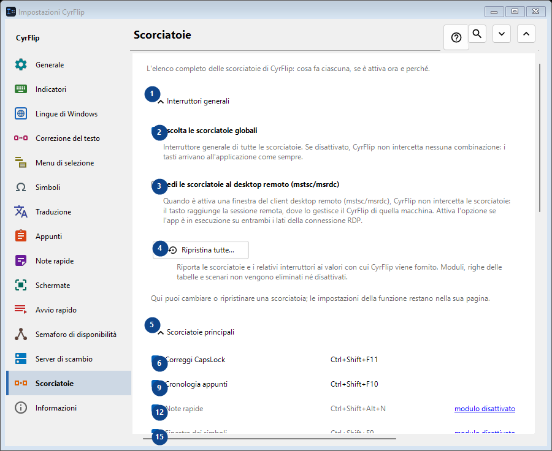
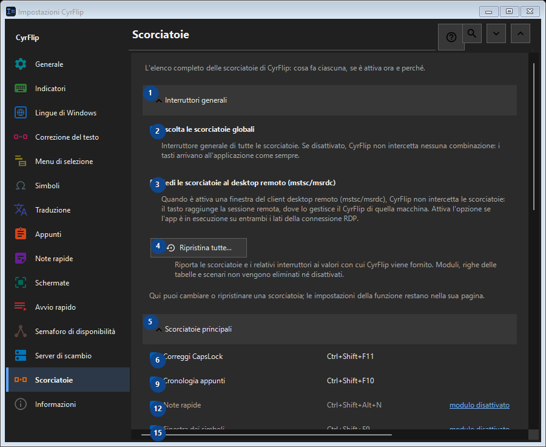

Scorciatoie
A cosa serve
L'elenco completo delle scorciatoie di CyrFlip: cosa fa ciascuna, se è attiva ora e perché.


Ordine delle operazioni
Le impostazioni si applicano subito. Non serve un ordine preciso; usa i gruppi qui sotto.
Elementi
1. Interruttori generali
Usa questo comando per l’azione indicata. Leggi ogni richiesta di conferma prima di accettare.
Le tue scorciatoie2. Ascolta le scorciatoie globali
Interruttore generale di tutte le scorciatoie. Se disattivato, CyrFlip non intercetta nessuna combinazione: i tasti arrivano all'applicazione come sempre.
Le tue scorciatoie3. Cedi le scorciatoie al desktop remoto (mstsc/msrdc)
Quando è attiva una finestra del client desktop remoto (mstsc/msrdc), CyrFlip non intercetta le scorciatoie: il tasto raggiunge la sessione remota, dove lo gestisce il CyrFlip di quella macchina. Attiva l'opzione se l'app è in esecuzione su entrambi i lati della connessione RDP.
Le tue scorciatoie4. Ripristina tutte...
Riporta le scorciatoie e i relativi interruttori ai valori con cui CyrFlip viene fornito. Moduli, righe delle tabelle e scenari non vengono eliminati né disattivati.
Le tue scorciatoie5. Scorciatoie principali
Usa questo comando per l’azione indicata. Leggi ogni richiesta di conferma prima di accettare.
Le tue scorciatoie6. Correggi CapsLock Ctrl+Shift+F11
Usa questo comando per l’azione indicata. Leggi ogni richiesta di conferma prima di accettare.
Le tue scorciatoie7. Modifica... - Correggi CapsLock Ctrl+Shift+F11
Usa questo comando per l’azione indicata. Leggi ogni richiesta di conferma prima di accettare.
Le tue scorciatoie8. Predefinito - Correggi CapsLock Ctrl+Shift+F11
Usa questo comando per l’azione indicata. Leggi ogni richiesta di conferma prima di accettare. Questo elemento non è disponibile. Attiva prima la funzione o seleziona una voce.
Le tue scorciatoie9. Cronologia appunti Ctrl+Shift+F10
Usa questo comando per l’azione indicata. Leggi ogni richiesta di conferma prima di accettare.
Le tue scorciatoie10. Modifica... - Cronologia appunti Ctrl+Shift+F10
Usa questo comando per l’azione indicata. Leggi ogni richiesta di conferma prima di accettare.
Le tue scorciatoie11. Predefinito - Cronologia appunti Ctrl+Shift+F10
Usa questo comando per l’azione indicata. Leggi ogni richiesta di conferma prima di accettare. Questo elemento non è disponibile. Attiva prima la funzione o seleziona una voce.
Le tue scorciatoie12. Note rapide Ctrl+Shift+Alt+N
Usa questo comando per l’azione indicata. Leggi ogni richiesta di conferma prima di accettare.
Le tue scorciatoie13. Modifica... - Note rapide Ctrl+Shift+Alt+N
Usa questo comando per l’azione indicata. Leggi ogni richiesta di conferma prima di accettare.
Le tue scorciatoie14. Predefinito - Note rapide Ctrl+Shift+Alt+N
Usa questo comando per l’azione indicata. Leggi ogni richiesta di conferma prima di accettare. Questo elemento non è disponibile. Attiva prima la funzione o seleziona una voce.
Le tue scorciatoie15. Finestra dei simboli Ctrl+Shift+F9
Usa questo comando per l’azione indicata. Leggi ogni richiesta di conferma prima di accettare.
Le tue scorciatoie16. Modifica... - Finestra dei simboli Ctrl+Shift+F9
Usa questo comando per l’azione indicata. Leggi ogni richiesta di conferma prima di accettare.
Le tue scorciatoie17. Predefinito - Finestra dei simboli Ctrl+Shift+F9
Usa questo comando per l’azione indicata. Leggi ogni richiesta di conferma prima di accettare. Questo elemento non è disponibile. Attiva prima la funzione o seleziona una voce.
Le tue scorciatoie18. Semaforo di disponibilità Ctrl+Shift+Alt+T
Usa questo comando per l’azione indicata. Leggi ogni richiesta di conferma prima di accettare.
Le tue scorciatoie19. Modifica... - Semaforo di disponibilità Ctrl+Shift+Alt+T
Usa questo comando per l’azione indicata. Leggi ogni richiesta di conferma prima di accettare.
Le tue scorciatoie20. Predefinito - Semaforo di disponibilità Ctrl+Shift+Alt+T
Usa questo comando per l’azione indicata. Leggi ogni richiesta di conferma prima di accettare. Questo elemento non è disponibile. Attiva prima la funzione o seleziona una voce.
Le tue scorciatoie21. Cattura di un'area dello schermo Ctrl+F12
Usa questo comando per l’azione indicata. Leggi ogni richiesta di conferma prima di accettare.
Le tue scorciatoie22. Modifica... - Cattura di un'area dello schermo Ctrl+F12
Usa questo comando per l’azione indicata. Leggi ogni richiesta di conferma prima di accettare.
Le tue scorciatoie23. Predefinito - Cattura di un'area dello schermo Ctrl+F12
Usa questo comando per l’azione indicata. Leggi ogni richiesta di conferma prima di accettare. Questo elemento non è disponibile. Attiva prima la funzione o seleziona una voce.
Le tue scorciatoie24. Cattura di tutto lo schermo Ctrl+F11
Usa questo comando per l’azione indicata. Leggi ogni richiesta di conferma prima di accettare.
Le tue scorciatoie25. Modifica... - Cattura di tutto lo schermo Ctrl+F11
Usa questo comando per l’azione indicata. Leggi ogni richiesta di conferma prima di accettare.
Le tue scorciatoie26. Predefinito - Cattura di tutto lo schermo Ctrl+F11
Usa questo comando per l’azione indicata. Leggi ogni richiesta di conferma prima di accettare. Questo elemento non è disponibile. Attiva prima la funzione o seleziona una voce.
Le tue scorciatoie27. Cattura di un'area con disegno Ctrl+Alt+F12
Usa questo comando per l’azione indicata. Leggi ogni richiesta di conferma prima di accettare.
Le tue scorciatoie28. Modifica... - Cattura di un'area con disegno Ctrl+Alt+F12
Usa questo comando per l’azione indicata. Leggi ogni richiesta di conferma prima di accettare.
Le tue scorciatoie29. Predefinito - Cattura di un'area con disegno Ctrl+Alt+F12
Usa questo comando per l’azione indicata. Leggi ogni richiesta di conferma prima di accettare. Questo elemento non è disponibile. Attiva prima la funzione o seleziona una voce.
Le tue scorciatoie30. Cattura di tutto lo schermo con disegno Ctrl+Alt+F11
Usa questo comando per l’azione indicata. Leggi ogni richiesta di conferma prima di accettare.
Le tue scorciatoie31. Modifica... - Cattura di tutto lo schermo con disegno Ctrl+Alt+F11
Usa questo comando per l’azione indicata. Leggi ogni richiesta di conferma prima di accettare.
Le tue scorciatoie32. Predefinito - Cattura di tutto lo schermo con disegno Ctrl+Alt+F11
Usa questo comando per l’azione indicata. Leggi ogni richiesta di conferma prima di accettare. Questo elemento non è disponibile. Attiva prima la funzione o seleziona una voce.
Le tue scorciatoie33. Apri la cartella degli screenshot Ctrl+F10
Usa questo comando per l’azione indicata. Leggi ogni richiesta di conferma prima di accettare.
Le tue scorciatoie34. Modifica... - Apri la cartella degli screenshot Ctrl+F10
Usa questo comando per l’azione indicata. Leggi ogni richiesta di conferma prima di accettare.
Le tue scorciatoie35. Predefinito - Apri la cartella degli screenshot Ctrl+F10
Usa questo comando per l’azione indicata. Leggi ogni richiesta di conferma prima di accettare. Questo elemento non è disponibile. Attiva prima la funzione o seleziona una voce.
Le tue scorciatoie36. Apri il menu dalla tastiera Ctrl+Shift+Alt+M
Usa questo comando per l’azione indicata. Leggi ogni richiesta di conferma prima di accettare.
Le tue scorciatoie37. Modifica... - Apri il menu dalla tastiera Ctrl+Shift+Alt+M
Usa questo comando per l’azione indicata. Leggi ogni richiesta di conferma prima di accettare.
Le tue scorciatoie38. Predefinito - Apri il menu dalla tastiera Ctrl+Shift+Alt+M
Usa questo comando per l’azione indicata. Leggi ogni richiesta di conferma prima di accettare. Questo elemento non è disponibile. Attiva prima la funzione o seleziona una voce.
Le tue scorciatoie39. Invia gli appunti al server
Usa questo comando per l’azione indicata. Leggi ogni richiesta di conferma prima di accettare.
Le tue scorciatoie40. Modifica... - Invia gli appunti al server
Usa questo comando per l’azione indicata. Leggi ogni richiesta di conferma prima di accettare.
Le tue scorciatoie41. Predefinito - Invia gli appunti al server
Usa questo comando per l’azione indicata. Leggi ogni richiesta di conferma prima di accettare. Questo elemento non è disponibile. Attiva prima la funzione o seleziona una voce.
Le tue scorciatoie42. Ricevi gli appunti dal server
Usa questo comando per l’azione indicata. Leggi ogni richiesta di conferma prima di accettare.
Le tue scorciatoie43. Modifica... - Ricevi gli appunti dal server
Usa questo comando per l’azione indicata. Leggi ogni richiesta di conferma prima di accettare.
Le tue scorciatoie44. Predefinito - Ricevi gli appunti dal server
Usa questo comando per l’azione indicata. Leggi ogni richiesta di conferma prima di accettare. Questo elemento non è disponibile. Attiva prima la funzione o seleziona una voce.
Le tue scorciatoie45. Mouse
Usa questo comando per l’azione indicata. Leggi ogni richiesta di conferma prima di accettare.
Le tue scorciatoie46. Modifica... - Menu sulla selezione Ctrl + tasto destro del mouse
Usa questo comando per l’azione indicata. Leggi ogni richiesta di conferma prima di accettare.
Le tue scorciatoie47. Predefinito - Menu sulla selezione Ctrl + tasto destro del mouse
Usa questo comando per l’azione indicata. Leggi ogni richiesta di conferma prima di accettare. Questo elemento non è disponibile. Attiva prima la funzione o seleziona una voce.
Le tue scorciatoie48. Conversione layout
Usa questo comando per l’azione indicata. Leggi ogni richiesta di conferma prima di accettare.
Le tue scorciatoie49. Traduzione
Usa questo comando per l’azione indicata. Leggi ogni richiesta di conferma prima di accettare.
Le tue scorciatoie50. Avvio rapido
Usa questo comando per l’azione indicata. Leggi ogni richiesta di conferma prima di accettare.
Le tue scorciatoie51. Windows
Usa questo comando per l’azione indicata. Leggi ogni richiesta di conferma prima di accettare.
Le tue scorciatoie